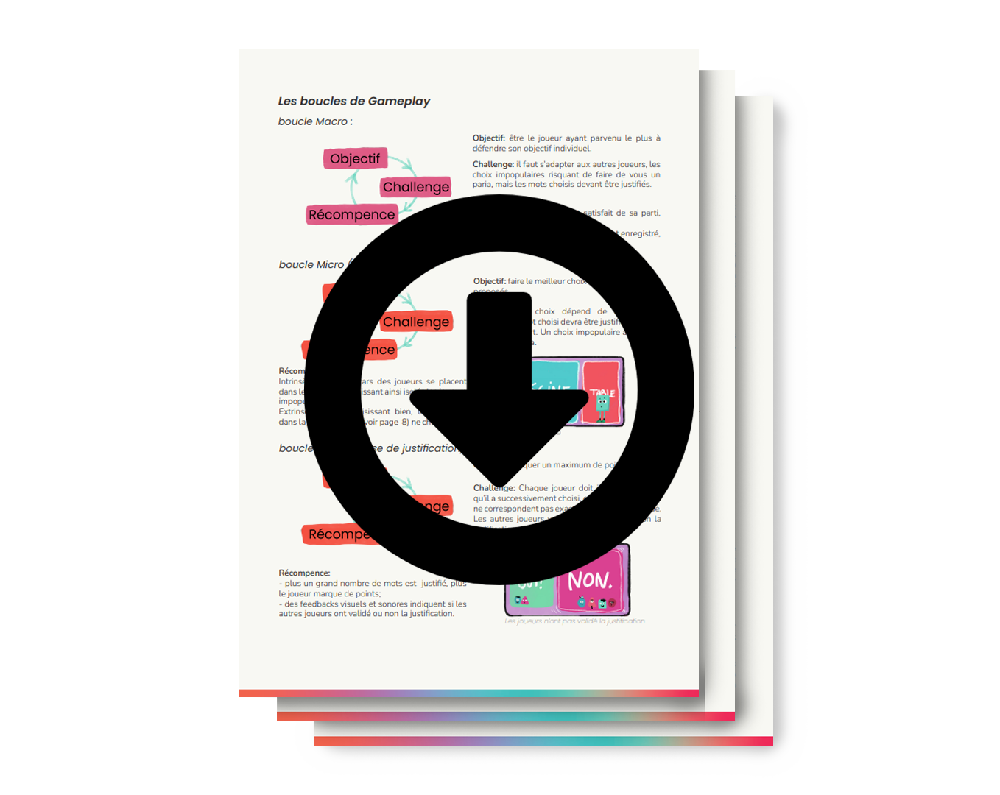

présentation
projets
galerie
me contacter
présentation
projets
galerie
me contacter
Pour ma candidature au CNAM ENJMIN en 2022, j’ai eu à concevoir un jeu centré sur le principe de conformisme social. J’ai donc entièrement conçu un “party game”, pensé pour être joué avec un smartphone, et j’ai rédigé son Game Design Document.

La vidéo de référence met en scène l’expérience de Asch, mettant en évidence le concept psychosociologique du conformisme
social. Il s’agit du processus poussant naturellement les individus à imiter un groupe afin de s’y intégrer.
Ce processus engendre plusieurs effets.
C’est un puissant mécanisme de cohésion sociale, mais qui a cependant également pour effet de faire perdre à chacun son individualité. Deux notions s’opposent
clairement: la singularité et le regard du groupe.
Le “jeu du paria” est un jeu d’ambiance pour support mobile comparable aux applications. Cette expérience ludique met au défi les joueurs de défendre leur objectif individuel tout en prenant en compte le regard des autres, tout ça dans une ambiance fun et décalée.
Un thème est attribué à chaque joueur. Lors de la première phase du jeu, des mots vont leur être proposés. Il devront sélectionner ceux de leurs choix, avec pour objectif, en fin de partie, de justifier en quoi ces mots s’incluent dans leurs thèmes. Cependant les mots choisis doivent également être sélectionnés en fonction d’une autre variable: le choix du groupe. Lorsqu’un joueur est seul à choisir un mot, sa “jauge de paria” augmente et il perd des points. Il est donc intéressant d’analyser les actions des autres participants, afin d’anticiper leurs réponses et ainsi éviter de devenir le paria!
J’ai théorisé l'expérience utilisateur et décrit plus en détail le gameplay dans le GDD. N’hésitez pas à le consulter!
Le jeu du paria met en évidence une mécanique sociale profonde avec humour et légèreté. L’univers du jeu se veut jovial, absurde,
mesquin, jouant de ce décalage entre le sujet et l’ambiance.
J’ai fait des recherches pour proposer une esthétique basée sur ces trois enjeux: diversité, dynamisme
et synthétisme. Les formes géométriques et l’association de nombreuses couleurs vives me permettent d’exprimer visuellement le fond de mon expérience.